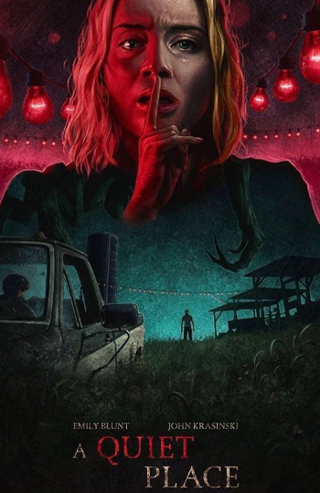
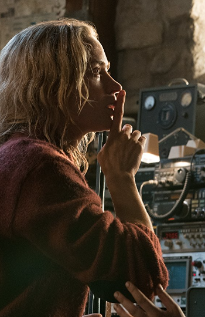

Director: John Krasinski
In a devastated Earth overrun by myriads of invincible extraterrestrial predators, the Abbotts struggle to survive in the desolate death trap of New York City. In this muffled dystopia, utter silence may offer a chance to stay alive, as even the slightest noise can attract the deadly invaders. However, despite twelve months of relentless terror, the resilient Abbotts remain unbroken, mastering the art of survival. But now, more than ever, they must live by one rule: don't make a sound or suffer the consequences.
 A Quiet Place is a suspenseful and original movie that masterfully uses silence to create tension, delivering a gripping story about family and survival in a world overrun by sound-sensitive monsters.
Five years after an ominous unseen presence drives most of society to suicide, a mother and her two children make a desperate bid to reach safety.
Following the events at home, the Abbott family now face the terrors of the outside world. Forced to venture into the unknown, they realize the creatures that hunt by sound are not the only threats lurking beyond the sand path.
A young woman named Sam finds herself trapped in New York City during the early stages of an invasion by alien creatures with ultra-sensitive hearing.